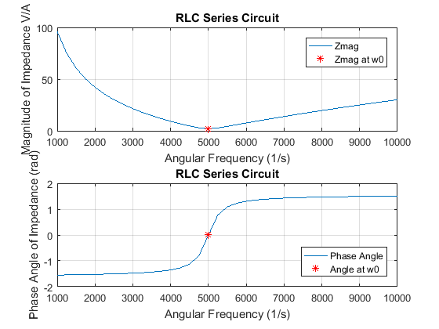

clc
clear
format SHORTE
close all
fprintf('Output for Program_03_1 written by Afeique Sheikh.\n\n')
w = 1000:250:10000;
R = 2;
L = 4e-3;
C = 10e-6;
w0 = 1/sqrt(L*C);
Z = R + ((w*L) - (1./(w*C)))*1i;
Z0 = R + ((w0*L) - (1/(w0*C)))*1i;
Z0mag = abs(Z0);
Z0ang = angle(Z0);
Zmag = abs(Z);
Zang = angle(Z);
t = [w' Zmag' Zang'];
fprintf(' w (1/s) Zmag (V/A) Angle (rad)\n')
disp(t);
disp(' ')
fprintf('The resonant frequency is: %g (1/s)\n\n', w0)
figure
subplot(2,1,1)
plot(w, Zmag, w0, Z0mag, 'r*')
grid on
title('RLC Series Circuit')
xlabel('Angular Frequency (1/s)')
ylabel('Magnitude of Impedance V/A')
legend('Zmag', 'Zmag at w0', 'Location', 'NorthEast')
subplot(2,1,2)
plot(w, Zang, w0, Z0ang, 'r*')
grid on
title('RLC Series Circuit')
xlabel('Angular Frequency (1/s)')
ylabel('Phase Angle of Impedance (rad)')
legend('Phase Angle', 'Angle at w0', 'Location', 'SouthEast')
figure
subplot(2,2,1)
Z4750 = R + ((4750*L) - (1/(4750*C)))*1i;
Z4750_phasor = [complex(0,0), Z4750];
plot(Z4750_phasor, 'LineWidth', 2)
grid on
title('Phasor for w=4750 1/s')
xlabel('Real Z (V/A)')
ylabel('Imaginary Z (V/A)')
subplot(2,2,2)
Z5000 = R + ((5000*L) - (1/(5000*C)))*1i;
Z5000_phasor = [complex(0,0), Z5000];
plot(Z5000_phasor, 'LineWidth', 2)
grid on
title('Phasor for w=5000 1/s')
xlabel('Real Z (V/A)')
ylabel('Imaginary Z (V/A)')
subplot(2,2,3)
Z5250 = R + ((5250*L) - (1/(5250*C)))*1i;
Z5250_phasor = [complex(0,0), Z5250];
plot(Z5250_phasor, 'LineWidth', 2)
grid on
title('Phasor for w=5250 1/s')
xlabel('Real Z (V/A)')
ylabel('Imaginary Z (V/A)')
Output for Program_03_1 written by Afeique Sheikh.
w (1/s) Zmag (V/A) Angle (rad)
1.0000e+03 9.6021e+01 -1.5500e+00
1.2500e+03 7.5027e+01 -1.5441e+00
1.5000e+03 6.0700e+01 -1.5378e+00
1.7500e+03 5.0183e+01 -1.5309e+00
2.0000e+03 4.2048e+01 -1.5232e+00
2.2500e+03 3.5501e+01 -1.5144e+00
2.5000e+03 3.0067e+01 -1.5042e+00
2.7500e+03 2.5442e+01 -1.4921e+00
3.0000e+03 2.1427e+01 -1.4773e+00
3.2500e+03 1.7881e+01 -1.4587e+00
3.5000e+03 1.4708e+01 -1.4344e+00
3.7500e+03 1.1837e+01 -1.4010e+00
4.0000e+03 9.2195e+00 -1.3521e+00
4.2500e+03 6.8289e+00 -1.2736e+00
4.5000e+03 4.6720e+00 -1.1284e+00
4.7500e+03 2.8659e+00 -7.9838e-01
5.0000e+03 2.0000e+00 0
5.2500e+03 2.7950e+00 7.7335e-01
5.5000e+03 4.3103e+00 1.0883e+00
5.7500e+03 5.9546e+00 1.2283e+00
6.0000e+03 7.6012e+00 1.3045e+00
6.2500e+03 9.2195e+00 1.3521e+00
6.5000e+03 1.0802e+01 1.3846e+00
6.7500e+03 1.2348e+01 1.4081e+00
7.0000e+03 1.3859e+01 1.4260e+00
7.2500e+03 1.5338e+01 1.4400e+00
7.5000e+03 1.6786e+01 1.4514e+00
7.7500e+03 1.8207e+01 1.4607e+00
8.0000e+03 1.9602e+01 1.4686e+00
8.2500e+03 2.0974e+01 1.4753e+00
8.5000e+03 2.2325e+01 1.4811e+00
8.7500e+03 2.3656e+01 1.4862e+00
9.0000e+03 2.4969e+01 1.4906e+00
9.2500e+03 2.6265e+01 1.4946e+00
9.5000e+03 2.7546e+01 1.4981e+00
9.7500e+03 2.8813e+01 1.5013e+00
1.0000e+04 3.0067e+01 1.5042e+00
The resonant frequency is: 5000 (1/s)
